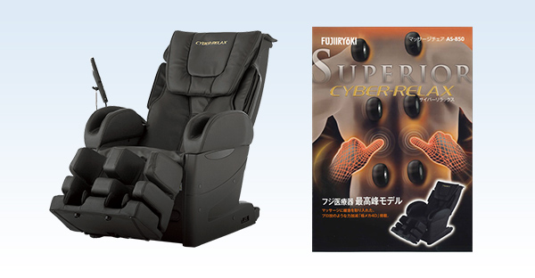

The history of massage chairs is the history of Fuji medical equipment.
Introducing the trajectory of the massage chair, which has been developing rapidly for more than half a century since 1954, along with the catalog at that time.
Fuji Medical Instrument's massage chair was literally born "from a pile of garbage". In the era shortly after the war, the founder Nobuo Fujimoto repeatedly collected materials such as wood, balls, and chains and made prototypes, and in 1954 the first massage chair was born.
* The first wooden machine still exists at our Osaka factory.
The first machine was certified as "Mechanical Engineering Heritage" in 2014.
Details are introduced on the " Mechanical Engineering Heritage Unit 1 " page.
Introducing a model in which four fir balls massage the shoulders and hips at the same time. A-1 is a product exclusively for fir. By operating the handle on the right side of the main body, I was able to move the position of the fir ball up and down and freely adjust it to the position I want to massage, such as the shoulders, back, and hips. The selling price at that time was 80,000 yen.
C-3はたたき専用です。A-1とよく似ていますが、もみ玉の形状に違いがあります。もみ玉の先には3つの突起がついており、たたきマッサージがより心地良い体感になるよう工夫が施されていました。もみ、たたき、それぞれのマッサージの動きに合わせてもみ玉の形状にもこだわりがあったのです。
「もみ」と「たたき」をスイッチ1つで変えられるよう内部の構造を進化させました。強さが自由に調節できるなどマッサージチェアとしての機能が進化するだけでなく、家庭でも使いやすいように応接間に置いても違和感のないデザインに仕上げていました。
もみ玉がローリングしながら背骨の両側をマッサージする「ローラー式」のマッサージチェアが生まれました。「もみ」「たたき」しか出来なかった技術が大きく飛躍。さらに、背もたれを自由にリクライニングできるようにもなったのも、このモデルからです。
フジ医療器は、ふくらはぎと ももへのマッサージを初めてマッサージチェアに取り入れ、脚部の血行促進に大きく貢献していきます。世界初、エアーバッグのみを搭載したマッサージチェアは、従来とはひと味違ったやさしいもみ心地が人気を博しました。
力強いタッチのもみ玉と、やさしいもみ心地のエアーを融合した新発想のマッサージチェアが登場。もみ玉専用、エアー専用のモデルしか存在していなかった市場に新しい風が吹いたのです。21世紀のトレンドを決定付けたコンセプトモデルとなりました。
一人ひとりの背筋ラインを検知し、最適なマッサージプログラムを自動で選ぶ「3Dポイントナビシステム」など、業界初の画期的な機能を数多く搭載しました。“機械が人に合わせてマッサージする”というこれまでにない革新的なマッサージチェアです。
気品のある柔らかなフォルムにモスグリーンのファブリック生地をあしらったデザインと、業界初の「フットストレッチ」・「3Dモードマッサージ」や「クロスプレス方式」といった人の手に近づけた新しいマッサージが多くのお客様に受け入れられました。
アールデコ調のデザインで「AS-878」は、グッドデザイン特別賞を受賞しました。機能の追及だけでなく、デザインへのこだわりもマッサージチェアの発展に欠かせないものになりました。
マッサージを施す範囲は、この時期から大幅に広がっていきます。足裏や肩ぐう（肩から二の腕にかけた範囲）までマッサージができるようになった「CYBER-Relax AS-800」シリーズは、この年に見事「グッドデザイン賞」を受賞しました。
新設計のもみ玉ユニット「極メカ」を初搭載。もみ玉のアームの形状と駆動ギアのピッチを改良し、もみ玉の最大突出量を従来に比べ約1.3倍に拡大。これを高精度・高出力モーターで駆動し、深く力強い刺激と人の手に近づいた精微な動きを実現しました。
当時、ソファとして寛ぐことが出来るタイプのマッサージチェアが流行しました。世界的有名な工業デザイナー奥山清行氏がデザインしたこのモデルは、コンパクトで丸みがあり、どんなインテリアとも馴染むシンプルなデザインと本格的なマッサージ機能を両立。グッドデザイン賞受賞商品です。
プロのマッサージ師のような緩急のある絶妙な力加減を再現した「極メカ4Ｄ」を搭載。上下・左右・前後という従来の3Dの動きに加えて「動作時間のコントロール」を新たに取り入れました。マッサージチェアとしての“気持ち良さ”を追求するフジ医療器独自の技術の進化は加速していきます。

マッサージチェアの新たな領域を創出する、次世代最高峰モデルのAS-960は、長時間での自宅における「休息」を提案。フラットに近いリラックスした状態で身体を預けられる「ベッドポジション」や、業界初の30分間自動コース「ソムリエコース」を搭載し、極上の休息をお楽しみいただけます。
完全受注生産、100万円（税別）の特別モデルが登場。高級本革を惜しみなく使い、使い込むほどに味わいが増す高級感と大人の落ち着きを兼ね備えたデザインに仕上げました。身体の癒しだけでなく心の癒しまで贅沢に味わうことを目指した最高峰モデルです。
幾重にも重なった現代人特有のコリをほぐすため、革新的な「力」と「技」を兼ね備えたメカユニット「深層極メカPRO」を搭載。より深く、より繊細にコリの深層部を攻略します。さらに、エアーの流量と速度が制御できるようになり、手技の力強さと躍動感を再現する「手もみモード」を新搭載しました。
これまで培ってきた高度なマッサージ技術を継承しながら、コリや疲れを感じる部位に特化して集中的にほぐす12種類の7分間ミニ自動コース「部位集中技」と足裏のマッサージを強化した新機能「足裏つかみ指圧」を新たに搭載したフラグシップモデルです。
AI technology is newly installed in the massage technology that has been accumulated since the company was founded. It is the highest peak model that realizes a detailed massage like a human technique automatically according to the body shape and condition of each person. By newly developing "5D-AI mechanism" and "AI double sensing", AI comprehensively reflects the user's body shape obtained by the load condition of the body and high-precision sensing technology in the massage, which is optimal for the user. We will give you a comfortable massage.

In addition to improving the body shape detection function by AI, it is the highest peak model equipped with "user customization mode" that allows you to adjust the force you like and register in advance and "app mode" that provides the optimum program from the smart AI application. .. With a built-in Bluetooth ® speaker, you can massage while enjoying immersive music.